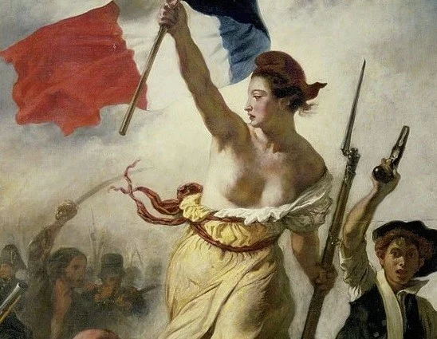
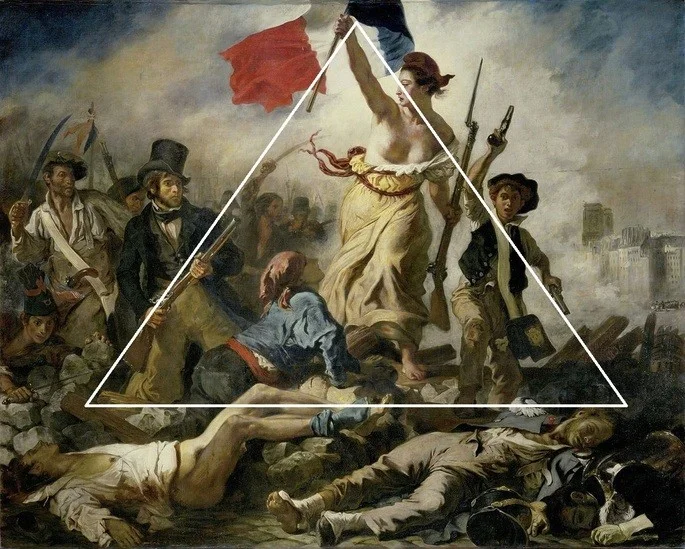
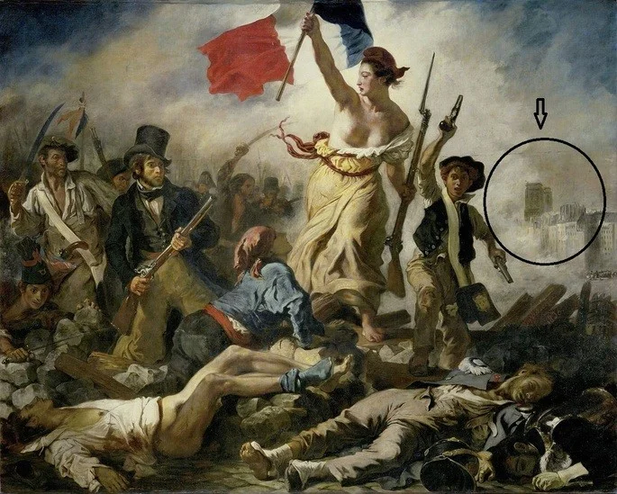
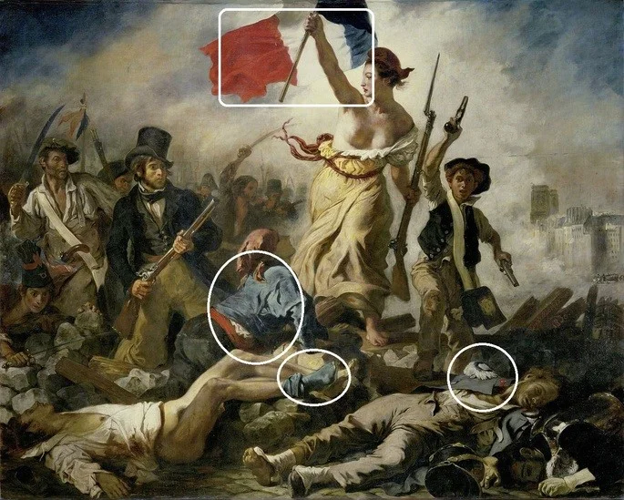

A liberdade Guiando o Povo

O quadro A liberdade guiando o povo é uma pintura que retrata a Revolução de 1830, importante acontecimento histórico ocorrido na França no mesmo ano em que a obra foi realizada.
O trabalho, cujo nome original é La Liberté guidant le peuple, pertencente ao período do Romantismo, é um óleo sobre tela com grandes dimensões de 2,6 m x 3,25 m e pode ser visto no Museu do Louvre, em Paris, na França.
Análise e Interpretação da Obra
A liberdade guiando o povo é uma daquelas obras de arte que entram para a história como ícone de uma época e de um país (no caso, a França).
Entretanto, sua simbologia ultrapassou fronteiras e tornou-se um emblema também na representação da luta por liberdade em diversas partes do mundo.
Sendo um pintor da escola romântica, o autor da tela, Eugène Delacroix, valoriza a composição cromática e as emoções, de modo a criar uma unidade em que tais elementos se tornam essenciais para a apreciação da obra.
A tela não é uma representação da Revolução Francesa de 1789. A imagem faz referência à outra rebelião, ocorrida 41 anos depois.
A figura feminina simbolizando a liberdade
A liberdade é retratada por Delacroix nesse trabalho através da figura de uma mulher, que se torna uma metáfora da emancipação e autonomia.
Ela ocupa o lugar central da composição e aparece com o torso nu, fazendo um paralelo com as antigas esculturas gregas.
Além disso, a mulher empunha em uma das mãos uma baioneta e na outra a bandeira da França, demonstrando senso de justiça e conduzindo a população no ato revolucionário.
O corpo da moça apresenta estrutura vigorosa, como era próprio do povo, e está em uma espécie de platô, o que a deixa em posição superior ao restante das personagens
A estrutura em Pirâmide
O artista escolheu para essa tela uma composição clássica, a estrutura piramidal, assim como outros mestres da arte já haviam se utilizado, tanto na pintura, quanto na escultura.
Podemos perceber que as formas e linhas exibidas formam um triângulo quando unidas, sendo que o vértice superior é um dos pontos fundamentais da obra, a mão da liberdade segurando a bandeira.
Tal arranjo conduz o olhar do observador para o símbolo francês, mesmo que a estrutura não seja percebida conscientemente.
As torres de Notre Dame
Conta-se que Delacroix foi influenciado por um acontecimento real, quando, em um dos dias da revolta, a bandeira francesa foi levantada próximo à Catedral de Notre Dame (outro importante símbolo da história da França).
Assim, ao pintar sua visão do que foi a rebelião, o artista insere na obra as torres de Notre Dame, que podem ser vistas ao fundo em meio a névoa que toma conta do conflito.
Paleta de Cores
Para os pintores do romantismo as cores eram essenciais na construção das obras. E nessa tela, tais elementos têm maior importância ainda, pois apresentam um símbolo nacionalista francês.
Grande parte da composição é formada por tons escuros, como ocres, marrons, pretos e cinzas. Entretanto, a bandeira da França na parte superior dá o tom vibrante à cena.
Além disso, alguns pontos de intensidade cromática aparecem, repetindo as cores da bandeira, como pode-se observar nas vestimentas do rapaz que se ajoelha aos pés da liberdade, a meia do homem morto e semi-nu e o casaco do soldado caído.
O azul, o branco e o vermelho têm o propósito também de criar pontos de iluminação em meio aos tons sombrios. Vale pontuar ainda que a névoa branca ao fundo da cena contribui para criar contraste e tensão.
Contexto histórico e social
A liberdade guiando o povo faz referência à Revolução de 1830, na França. Conhecida também como as Três Gloriosas, a revolta aconteceu em julho, nos dias 27, 28 e 29.
Contrários ao aumento dos impostos e aos desmandos absolutistas do monarca que ocupava o poder, Carlos X, a oposição liberal lidera uma revolta que conta com apoio do povo para destronar o rei.
Assim, durante três dias as ruas de Paris são tomadas por rebeldes, gerando conflitos violentos. O rei Carlos X, amedrontado, foge para a Inglaterra, receando ter o mesmo fim de Luis XVI, guilhotinado na Revolução Francesa de 1799.
Os ideais levantados pelos revolucionários estavam fundados no mesmo lema empregado anteriormente: liberdade, igualdade, fraternidade.
Para que a revolta não tivesse consequências que beneficiassem as camadas populares, quem assume o poder é o duque Luís Felipe de Orleans, que teve apoio da alta burguesia, empregando medidas liberais e ficando conhecido como o "rei burguês".